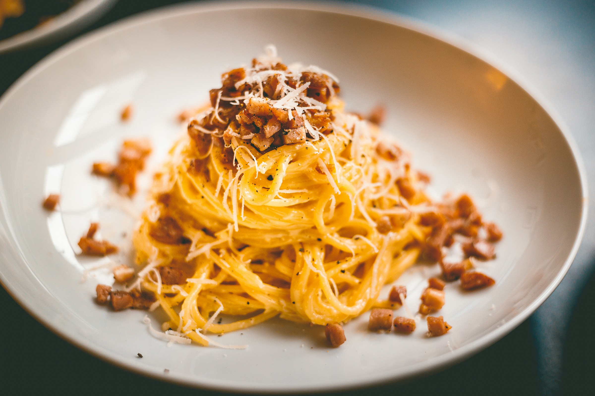

Home
Spaghetti carbonara

Photo by Rob Wicks on Unsplash
Origin of Carbonara Pasta
The recipe is considered to originate from Rome. It belongs to a family of pasta dishes with cured pork, cheese, and pepper, and may have evolved from earlier dishes like pasta cacio e uova or pasta alla gricia. The name “carbonara” first appeared in print in 1950, linked to a pasta dish popular among American officers after the liberation of Rome in 1944.
Carbonara pasta (in Italian: pasta alla carbonara) is a culinary specialty made with pasta, most often spaghetti, coated in an emulsion of a little pasta cooking water with grated pecorino cheese and egg yolks, then served with black pepper and guanciale, cut into small pieces.
Ingredients (Serves 7)
- 350 g of spaghetti
- 120 g of bacon
- 1 clove of garlic
- 3 eggs
- 50 g of grated pecorino cheese 1 tablespoon of olive oil
- black pepper
- salt
Steps
- Cut the guanciale into 1/2-cm-thick strips.
- Brown the guanciale in a pan with olive oil and crushed garlic, then remove the garlic and pan from the heat.
- In a bowl, beat the eggs with a pinch of salt and the grated pecorino cheese
- Cook the spaghetti in a large pot of salted boiling water until al dente, then drain.
- Add the spaghetti to the pan with the guanciale, pour in the egg and cheese mixture, and stir well.
- Sprinkle with freshly ground black pepper and serve.